Property solutions
A tenancy of their own — in a house that actually works.
Too many placements fail for a reason that has nothing to do with the care: the building was wrong. We source, adapt and refurbish homes in Nottinghamshire around the person who will live in them.
Tenancy and support stay separate
The person is a tenant, with the rights of a tenant. We are the support provider. Keeping those two roles apart protects the person’s home if their support arrangements ever change — including if they change away from us.
Our housing partner
We work with Beacon Supported Housing CIC, a community interest company, to source and hold suitable properties. That partnership is how we can move on a property quickly when a referral needs one.
Standards we work to
The Real Tenancy Test
A sector standard used to check that a supported living tenancy is a genuine tenancy — that the person has real rights over their own home, real choice about their support, and that the two are not quietly bundled together.
REACH Tenancy Standards
Eleven standards describing what people with a learning disability should be able to expect from supported living: choosing who supports them, choosing who they live with, and having a place of their own.
What we have delivered
Real properties, in Nottinghamshire.
This is one bungalow in Nottinghamshire, photographed before we started and again on completion in May 2024. Drag each image to see what changed. Nothing here is staged and nothing is a stock photograph.
-
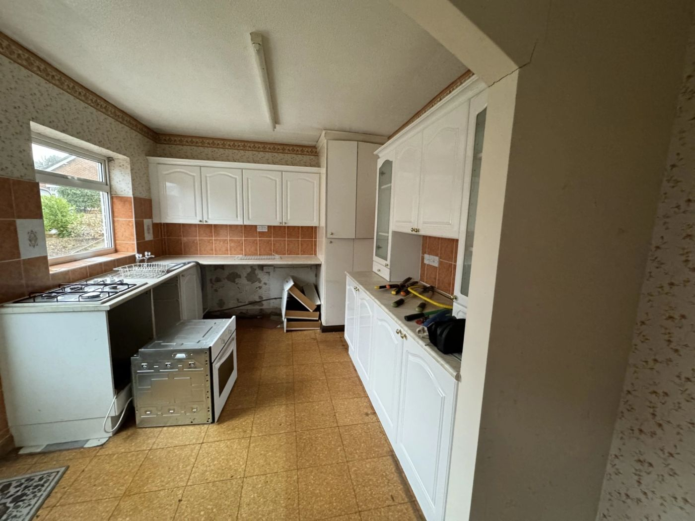
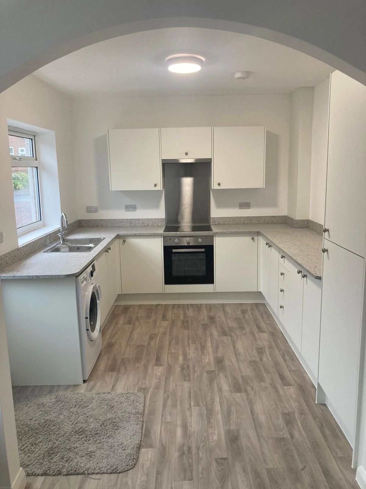
The kitchen. Stripped back to the walls: new units, worktops, appliances, flooring, lighting and electrics. -
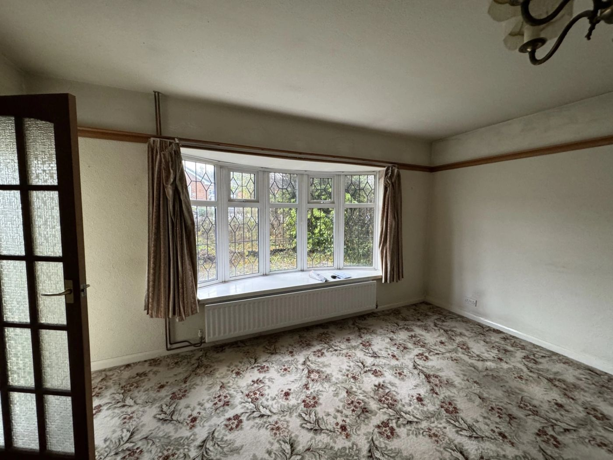

The lounge. The same bay, reglazed — and roughly three times the daylight reaching the room. -
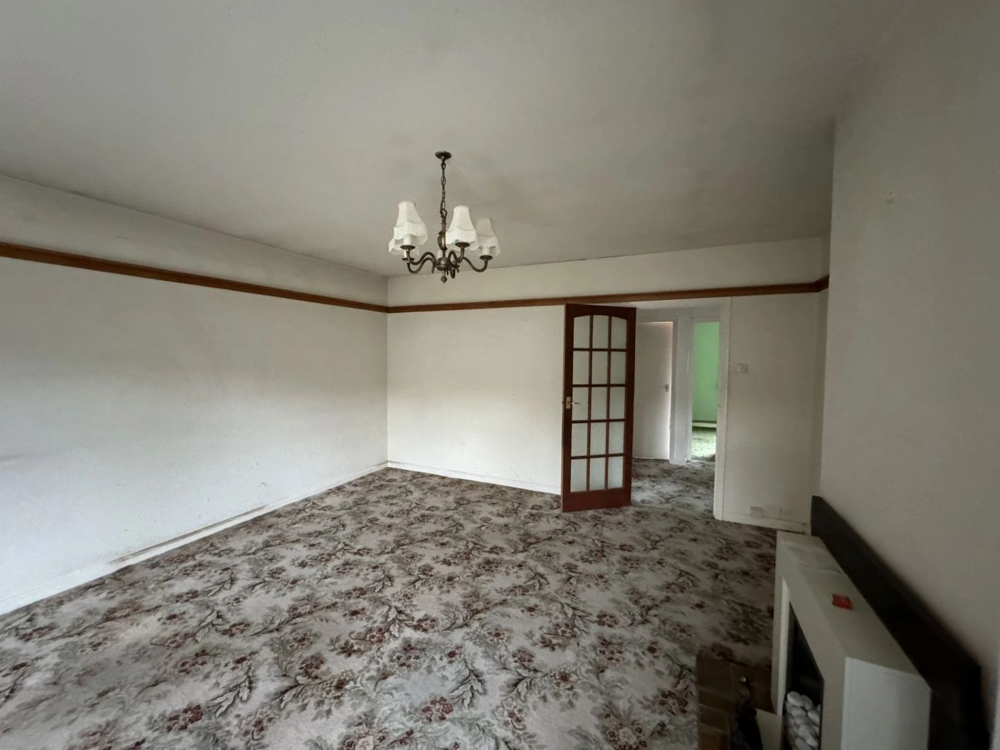
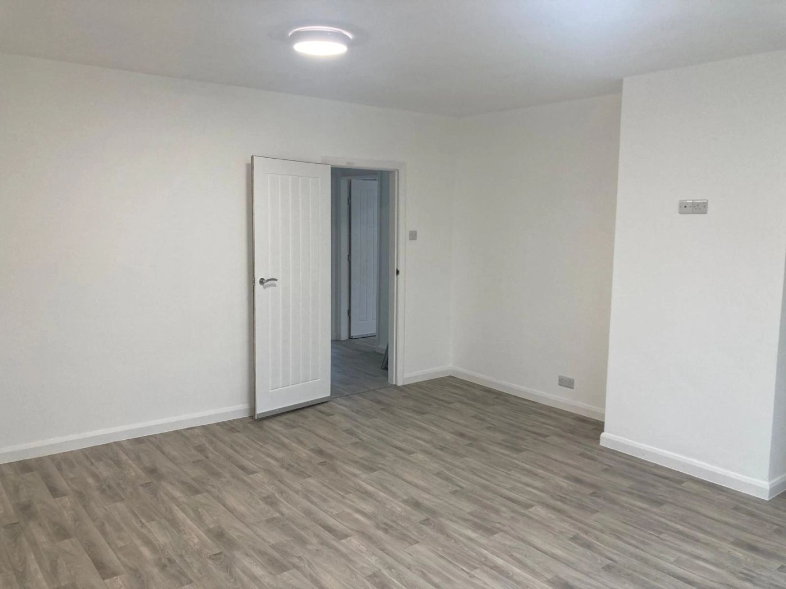
The second reception room. Fireplace, dado rail and glazed door out; clear circulation in. -
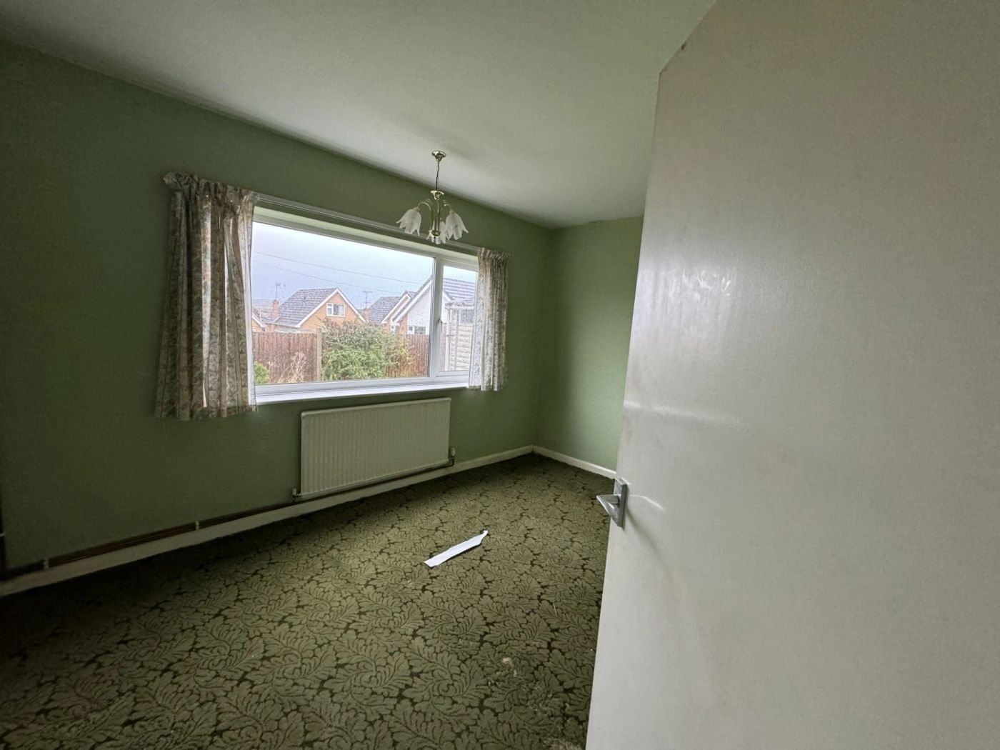
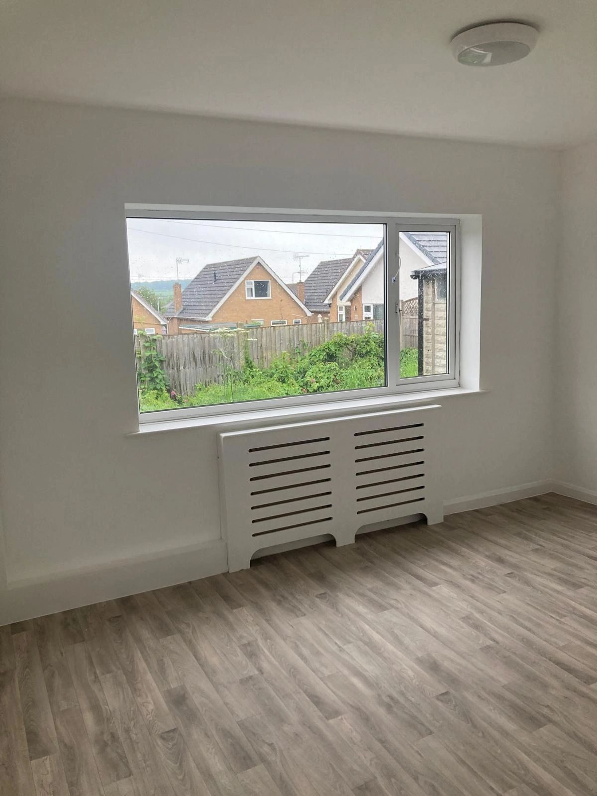
The first bedroom. Same window, same view. The radiator is now boxed in — which matters if someone is at risk of falls or burns. -
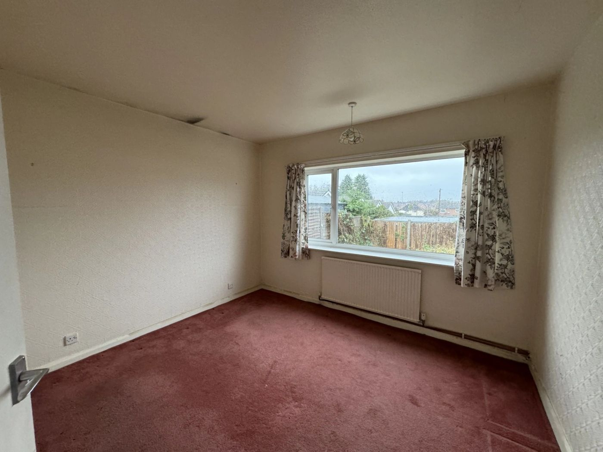
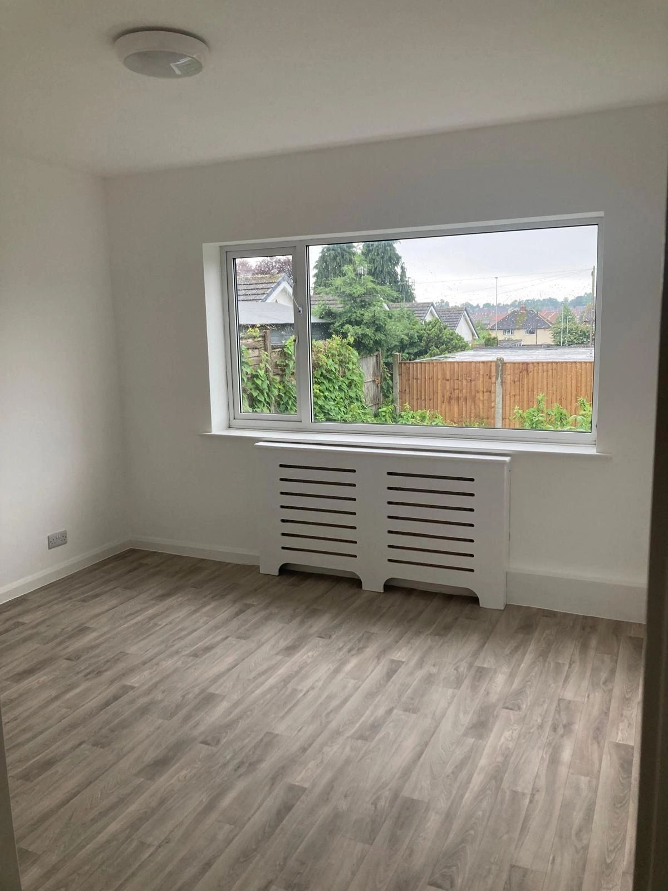
The second bedroom. Carpet replaced with a wipe-clean floor — a practical choice, not a cosmetic one.
Fitted new
-
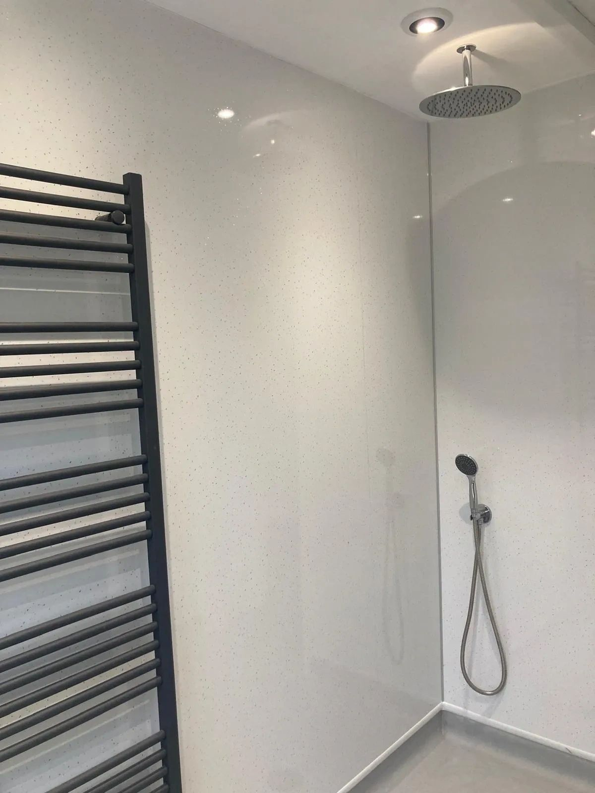
The bespoke wet room. Level floor, no step into the shower. -
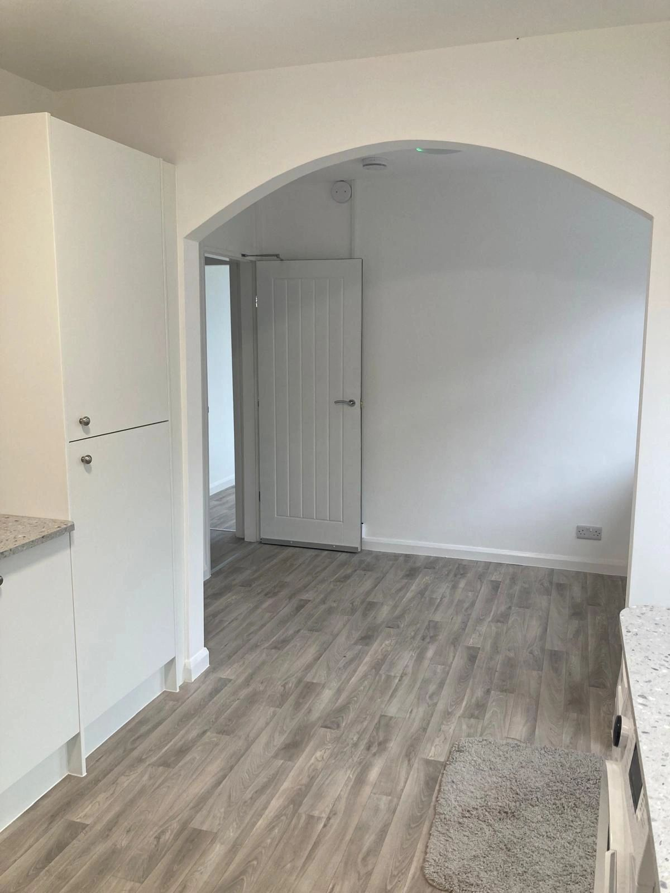
Kitchen to hallway. One floor finish throughout, with no thresholds to cross. -
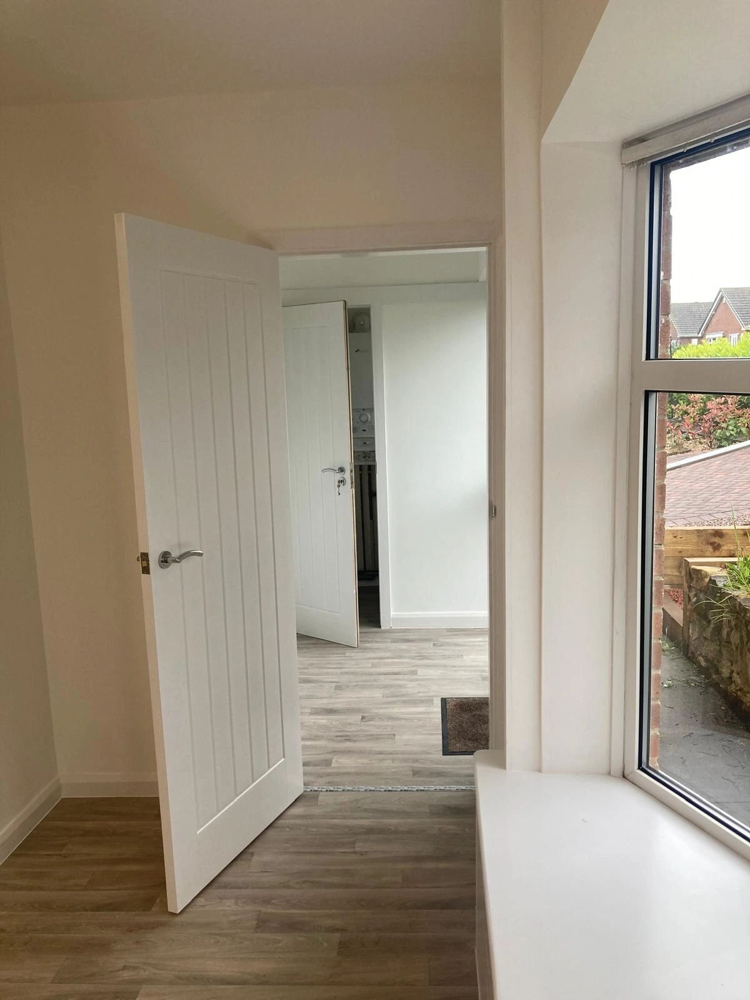
The hallway. New internal doors throughout.
These photographs prove the refurbishment standard, but not the accessibility specification.
The transformation is real and worth showing. What the frames still do not show is the specification a commissioner is actually reading for: door widths, wheelchair turning circles, level access at the entrance, ceiling track hoist provision, grab rails, or worktop heights. The wet room’s level floor is the only accessibility feature currently visible anywhere on this site. The before and after frames were also shot from different positions and in different orientations, so the pairs above are aligned as closely as the source photography allows. Recommended: on the next refurbishment, shoot before and after from an identical, marked camera position, and put the accessibility features deliberately in frame.
A new two-bedroom wheelchair-accessible bungalow
A new two-bedroom wheelchair-accessible bungalow in Nottinghamshire — level access throughout, sized for wheelchair use rather than merely permitting it.
Property specification details not yet supplied.
Needed for commissioners: number of bedrooms let (confirmed as two), door widths, turning circles, ceiling track hoist provision, wet room specification, parking and level-access details, EPC rating, and current availability. Confirm what may be published without identifying a tenant.
Need a property for a specific person?
If you are trying to place someone and the housing is the obstacle, talk to us early — before the search narrows to whatever happens to be empty.
- Referralsreferrals@
obsidiansupportedliving .co.uk - Telephone0115 718 1760